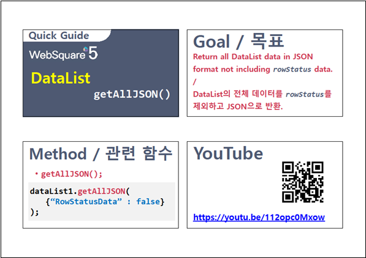

DataList의 전체 데이터를 받는 함수 예시입니다. 반환되는 데이터 유형은 4가지이며, 각 유형에 맞는 함수는 다음과 같습니다.
JSON 형식 : getAllJSON
1차원 Array 형식 + 컬럼 정보 : getAllArray
1차원 Array 형식 : getAllData
XML 형식 : getAllXML
전체 데이터를 JSON 형식으로 반환받기
행의 상태 값(rowStatus)을 제외한 전체 데이터를 JSON 형식으로 반환받기
컬럼 정보와 함께 전체 데이터를 1차원 Array 형식으로 반환받기
전체 데이터를 1차원 Array 형식으로 반환받기
전체 데이터를 XML 형식으로 반환받기
STEP 1. 버튼 전체 데이터 받기 - JSON 형식을 클릭합니다.
STEP 2. 실행 결과를 확인합니다.
DataList의 전체 데이터가 JSON 형식으로 반환됩니다. 반환된 JSON의 키 'rowStatus'는 웹스퀘어 엔진에서 생성한 키입니다. 행(Row)의 데이터 상태를 확인할 수 있습니다.
영역 [로그 확인]에 출력된 로그를 확인합니다.
(브라우저의 개발자 도구 콘솔에도 로그가 출력되며, 반환된 객체를 확인할 수 있습니다.)로그
[15:28:58] # 전체 데이터 받기 - JSON 형식 | 함수 getAllJSON 호출 값
[15:28:58] [{"label":"공정하다는 착각","price":"18000","rowStatus":"R"},{"label":"무엇이 옳은가","price":"17800","rowStatus":"R"}]STEP 1. 버튼 전체 데이터 받기 - JSON 형식 - rowStatus 제외를 클릭합니다.
STEP 2. 실행 결과를 확인합니다.
DataList의 행의 상태 값(rowStatus)이 제외된 전체 데이터가 JSON 형식으로 반환됩니다.
영역 [로그 확인]에 출력된 로그를 확인합니다.
(브라우저의 개발자 도구 콘솔에도 로그가 출력되며, 반환된 객체를 확인할 수 있습니다.)로그
[17:25:14] # 전체 데이터 받기 - JSON 형식 - rowStatus 제외 | 함수 getAllJSON({ rowStatusData: false }) 호출 값
[17:25:14] [{"label":"공정하다는 착각","price":"18000"},{"label":"무엇이 옳은가","price":"17800"}]STEP 1. 버튼 전체 데이터 받기 - 1차원 Array 형식 + 컬럼 정보을 클릭합니다.
STEP 2. 실행 결과를 확인합니다.
DataList의 컬럼 정보와 함께 전체 데이터가 1차원 배열 형식으로 반환됩니다. 반환되는 데이터는 JSON 형식으로, KEY 'data'에는 DataList의 전체 데이터가 1차원 배열로, KEY 'columnInfo'에는 컬럼의 ID가 1차원 배열로 구성되어 있습니다.
영역 [로그 확인]에 출력된 로그를 확인합니다.
(브라우저의 개발자 도구 콘솔에도 로그가 출력되며, 반환된 객체를 확인할 수 있습니다.)로그
[15:45:37] # 전체 데이터 받기 - 1차원 Array 형식 + 컬럼 정보 | 함수 getAllArray 호출 값
[15:45:37] {"columnInfo":["label","price"],"data":["공정하다는 착각","18000","무엇이 옳은가","17800"]}STEP 1. 버튼 전체 데이터 받기 - 1차원 Array 형식을 클릭합니다.
STEP 2. 실행 결과를 확인합니다.
DataList의 전체 데이터가 1차원 배열 형식으로 반환됩니다.
반환 값
["공정하다는 착각","18000","무엇이 옳은가","17800"]
영역 [로그 확인]에 출력된 로그를 확인합니다.
(브라우저의 개발자 도구 콘솔에도 로그가 출력되며, 반환된 객체를 확인할 수 있습니다.)로그
[15:48:04] # 전체 데이터 받기 - 1차원 Array 형식 | 함수 getAllData 호출 값 [15:48:04] ["공정하다는 착각","18000","무엇이 옳은가","17800"]
STEP 1. 버튼 전체 데이터 받기 - XML 형식을 클릭합니다.
STEP 2. 실행 결과를 확인합니다.
DataList의 전체 데이터가 XML 형식으로 반환됩니다.
반환되는 XML의 노드명은 DataList의 속성 'baseNode'와 속성 'repeatNode'의 값에 정의된 값으로 구성됩니다.
DataListe 소스 코드 예시 ) baseNode="list" repeatNode="map"반환 값
<list id="dlt_books_1"> <map index="0"> <label>공정하다는 착각</label> <price>18000</price> <rowStatus statusValue="0">R</rowStatus> </map> <map index="1"> <label>무엇이 옳은가</label> <price>17800</price> <rowStatus statusValue="0">R</rowStatus> </map> </list>
영역 [로그 확인]에 출력된 로그를 확인합니다.
(브라우저의 개발자 도구 콘솔에도 로그가 출력되며, 반환된 객체를 확인할 수 있습니다.)로그
[15:53:30] # 전체 데이터 받기 - XML 형식 | 함수 getAllXML 호출 값 [15:53:30] <list id="dlt_books_1"><map index="0"><label>공정하다는 착각</label><price>18000</price><rowStatus statusValue="0">R</rowStatus></map><map index="1"><label>무엇이 옳은가</label><price>17800</price><rowStatus statusValue="0">R</rowStatus></map></list>
원하는 시점에 컴포넌트의 함수 'getAllJSON'를 이용하여 스크립트를 작성합니다.
스크립트
// 예제 파일에서는 스크립트 scwin.btn_exam1_1_onclick에 작성되어 있습니다. // DataList 'dlt_books_1'의 전체 데이터를 JSON 형식으로 반환받습니다. let result = dlt_books_1.getAllJSON();
반환 데이터는 JSON 형식입니다. 반환된 JSON의 키 'rowStatus'는 웹스퀘어 엔진에서 생성한 키입니다. 행(Row)의 데이터 상태를 확인할 수 있습니다.
반환 값 - getAllJSON()
[
{ "label": "공정하다는 착각", "price": "18000", "rowStatus": "R" },
{ "label": "무엇이 옳은가", "price": "17800", "rowStatus": "R" }
]원하는 시점에 컴포넌트의 함수 'getAllJSON'를 이용하여 스크립트를 작성합니다.
함수 'getAllJSON'의 첫 번째 인자에 { rowStatusData: false }를 전달합니다.스크립트
// 예제 파일에서는 스크립트 scwin.btn_exam1_5_onclick에 작성되어 있습니다. // DataList 'dlt_books_1'의 전체 데이터를 'rowStatus'를 제외하고 JSON 형식으로 반환받습니다. let result = dlt_books_1.getAllJSON({ rowStatusData: false });
반환 데이터는 JSON 형식입니다. 반환된 JSON에 KEY 'rowStatus'가 제외되었습니다.
반환 값 - getAllJSON({ rowStatusData: false })
[
{ "label": "공정하다는 착각", "price": "18000" },
{ "label": "무엇이 옳은가", "price": "17800" }
]원하는 시점에 컴포넌트의 함수 'getAllArray'를 이용하여 스크립트를 작성합니다.
스크립트
// 예제 파일에서는 스크립트 scwin.btn_exam1_2_onclick에 작성되어 있습니다. // DataList 'dlt_books_1'의 전체 데이터를 '1차원 Array 형식 + 컬럼 정보'으로 반환받습니다. let result = dlt_books_1.getAllArray();
반환되는 데이터는 JSON 형식으로, KEY 'data'에는 DataList의 전체 데이터가 1차원 배열로, KEY 'columnInfo'에는 컬럼의 ID가 1차원 배열로 구성되어 있습니다.
반환 값 - getAllArray()
{
"columnInfo": ["label", "price"],
"data": ["공정하다는 착각", "18000", "무엇이 옳은가", "17800"]
}원하는 시점에 컴포넌트의 함수 'getAllData'를 이용하여 스크립트를 작성합니다.
스크립트
// 예제 파일에서는 스크립트 scwin.btn_exam1_3_onclick에 작성되어 있습니다. // DataList 'dlt_books_1'의 전체 데이터를 '1차원 Array 형식'으로 반환받습니다. let result = dlt_books_1.getAllData();
반환 데이터는 1차원 배열 형식입니다.
반환 값 - getAllData()
["공정하다는 착각","18000","무엇이 옳은가","17800"]
원하는 시점에 컴포넌트의 함수 'getAllXML'를 이용하여 스크립트를 작성합니다.
스크립트
// 예제 파일에서는 스크립트 scwin.btn_exam1_4_onclick에 작성되어 있습니다. // DataList 'dlt_books_1'의 전체 데이터를 XML 형식으로 반환받습니다. let result = dlt_books_1.getAllXML();
반환 데이터는 XML 형식입니다. XML의 노드명은 Dataist의 속성 'baseNode'와 속성 'repeatNode'의 값에 정의된 값으로 구성됩니다.
반환 값 - getAllXML()
<list id="dlt_books_1"> <map index="0"> <label>공정하다는 착각</label> <price>18000</price> <rowStatus statusValue="0">R</rowStatus> </map> <map index="1"> <label>무엇이 옳은가</label> <price>17800</price> <rowStatus statusValue="0">R</rowStatus> </map> </list>
소스 코드 - DataList 정의
<w2:dataList id="dlt_books_1" baseNode="list" repeatNode="map" valueAttribute=""> <w2:columnInfo> <w2:column dataType="text" id="label" name="도서명"></w2:column> <w2:column dataType="text" id="price" name="정가"></w2:column> </w2:columnInfo> </w2:dataList>
getAllJSON( )
getAllArray( )
getAllData( )
getAllXML( )
DataList - getAllJSON
링크 : https://youtu.be/112opc0Mxow
